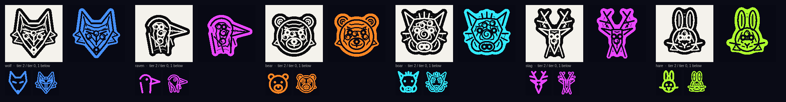

Round 2, the carved emblem: wolf, raven, bear, boar, stag, hare (compare the reference's wolf, raven, bear and boar)

All 32 animals and home's World Tree
Big squares: the carved emblem (the close-up tier), black on white like the reference and in neon. The small pair under each: the plain glyph (used when small) and the carved bands (mid sizes).